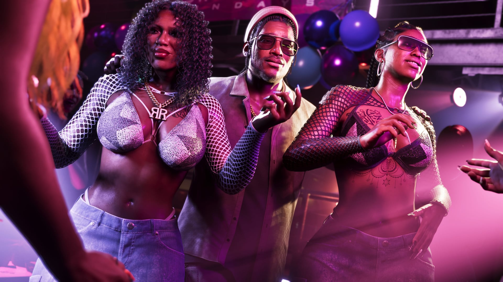
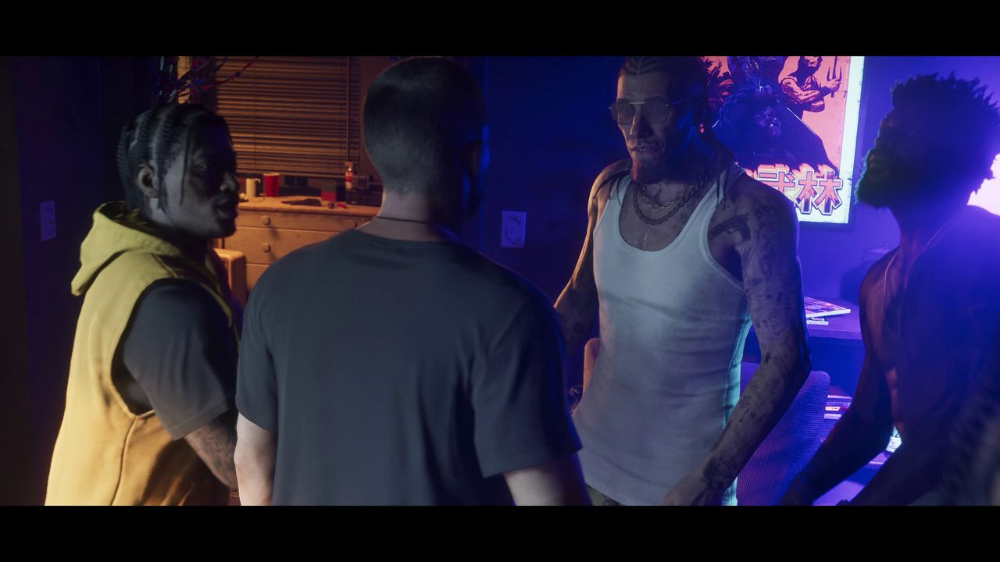
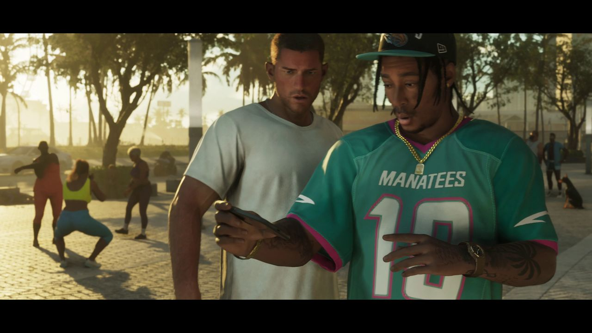
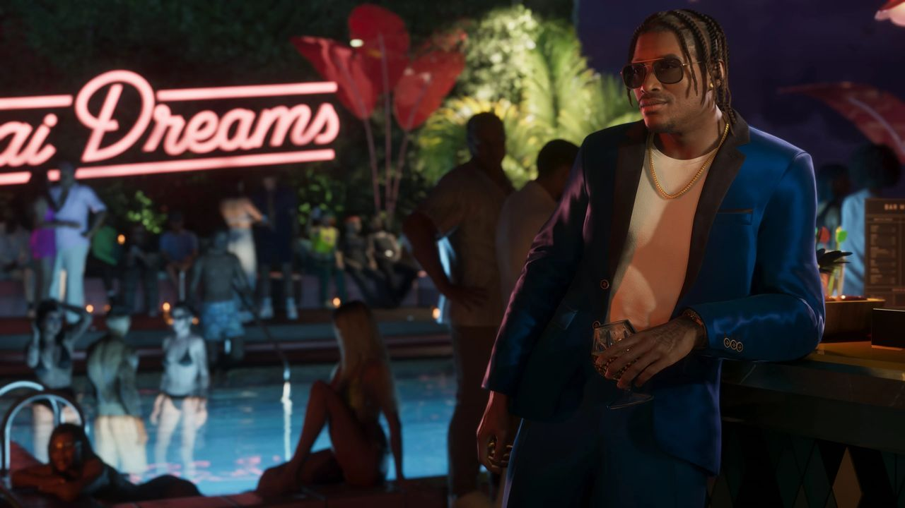
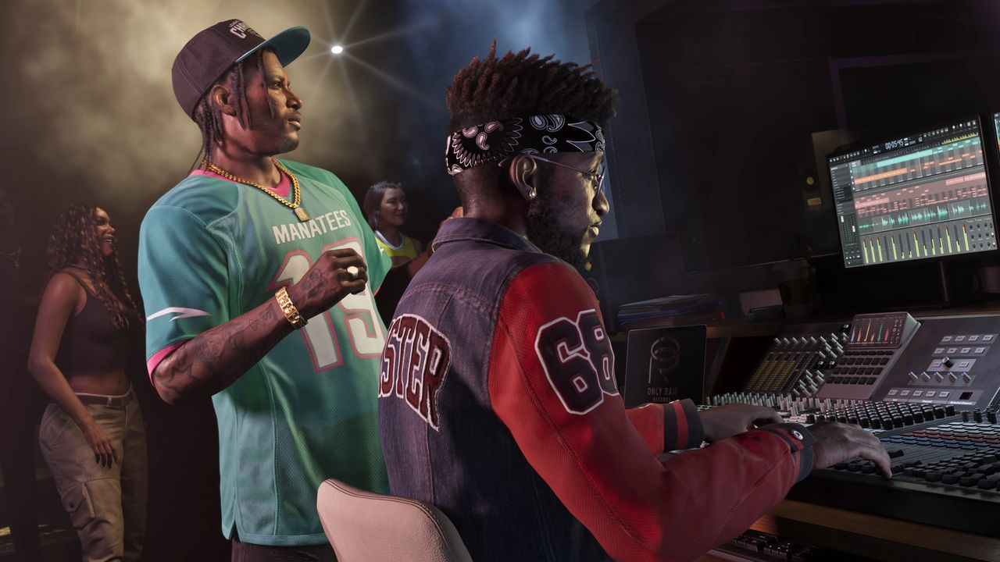
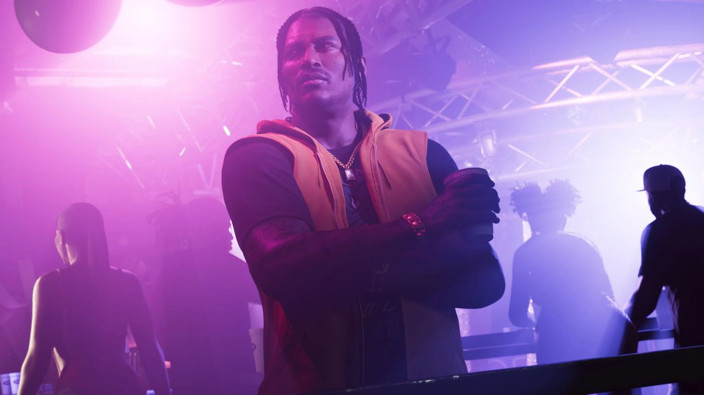

© Rockstar Games / Take-Two Interactive
Dre'Quan Priest
EN BREF
- Rôle : Personnage secondaire
- Surnoms : Dre, D
- Activité : Patron de label musical
- Label : Only Raw Records
- Artistes : Real Dimez
- Entourage : Boobie Ike, Jason et Lucia
- Doublage : Non annoncé
Dre'Quan Priest veut percer dans la musique à Vice City. Sa méthode tient en une réplique du site officiel : « Les danseuses sont mes A&R. Si le morceau est un tube, les DJ vont le passer en boucle ».
Galerie





© Rockstar Games / Take-Two Interactive — images officielles de GTA VI (bandes-annonces, captures, site officiel), via GTA Wiki.
Son histoire selon Rockstar
« Only Raw… Records. » Dre'Quan a toujours été plus un débrouillard qu'un gangster. Même quand il dealait dans la rue pour joindre les deux bouts, son but restait de percer dans la musique.
« Tu fais partie du label, maintenant. » Depuis qu'il a signé les Real Dimez, ses jours à programmer des artistes dans le club de Boobie pourraient être comptés : il vise désormais toute la scène de Vice City.
Détails repérés
Dans la bande-annonce 2, sur une capture officielle et dans une vidéo du site, Dre'Quan porte un maillot n° 19 des Vice City Manatees (fabriqué par Eris, ligue AFF) et une casquette des Vice City Narcos.